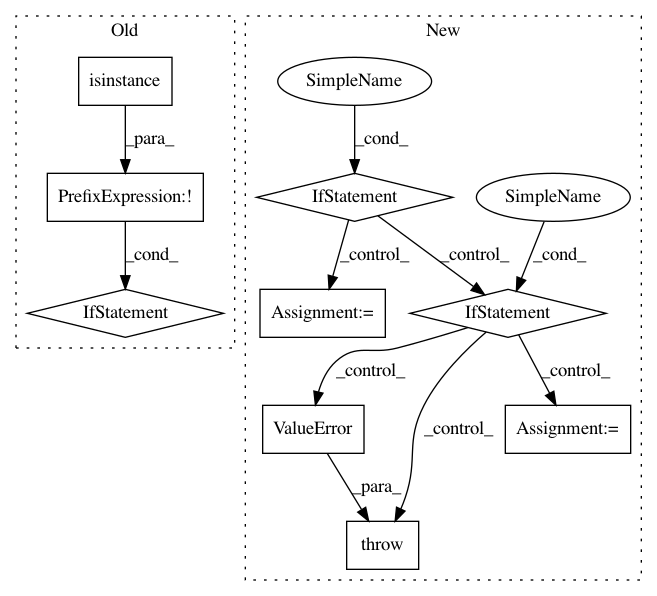

bb62b33640b7ecb9f5259fe94fa2b7368bd0d85c,scanpy/plotting/_utils.py,,adjust_palette,#Any#Any#,263
Before Change
islist = False
if isinstance(palette, list):
islist = True
if ((islist and len(palette) < length)
or (not isinstance(palette, list) and len(palette.by_key()["color"]) < length)):
if length <= 28:
palette = palettes.default_26
elif length <= len(palettes.default_64): // 103 colors
palette = palettes.default_64
else:
palette = ["grey" for i in range(length)]
logg.info("more than 103 colors would be required, initializing as "grey"")
return palette if islist else cycler(color=palette)
elif islist:
return palette
elif not isinstance(palette, Cycler):
return cycler(color=palette)
else:
return palette
def add_colors_for_categorical_sample_annotation(adata, key, palette=None, force_update_colors=False):
if key + "_colors" in adata.uns and not force_update_colors:
if len(adata.obs[key].cat.categories) > len(adata.uns[key + "_colors"]):
logg.info(
After Change
def adjust_palette(palette: Union[Cycler, ListedColormap, Sequence[ColorLike]], length: int):
if isinstance(palette, cabc.Sequence):
length_pal = len(palette)
elif isinstance(palette, Cycler):
length_pal = len(palette.by_key()["color"])
elif isinstance(palette, ListedColormap):
length_pal = len(palette.colors)
else:
raise ValueError(f"Unknown palette type {type(palette)}")
if length_pal < length:
if length <= 28:
palette = palettes.default_26
elif length <= len(palettes.default_64): // 103 colors
In pattern: SUPERPATTERN
Frequency: 3
Non-data size: 9
Instances
Project Name: theislab/scanpy
Commit Name: bb62b33640b7ecb9f5259fe94fa2b7368bd0d85c
Time: 2019-09-14
Author: flying-sheep@web.de
File Name: scanpy/plotting/_utils.py
Class Name:
Method Name: adjust_palette
Project Name: prody/ProDy
Commit Name: e93f4d4dcd70fc3eaf87779fc9f0b34f98e04ac8
Time: 2012-10-17
Author: lordnapi@gmail.com
File Name: lib/prody/utilities/pathtools.py
Class Name:
Method Name: gunzip
Project Name: pyannote/pyannote-audio
Commit Name: 4d0dc3496c221c4b1ec77fe15cb304fdc5fd800c
Time: 2020-01-09
Author: bredin@limsi.fr
File Name: pyannote/audio/embedding/generators.py
Class Name: SpeechSegmentGenerator
Method Name: __init__